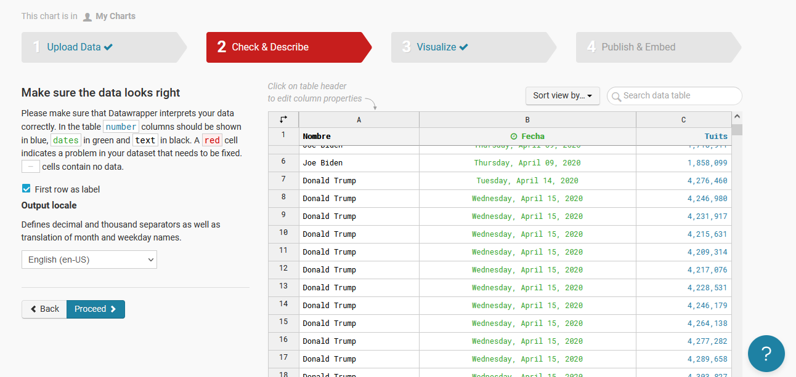

Actividad Dirigida 3
Los datos que aparecen a continuación son sacados del Proyecto TRESCA en concreto de https://github.com/flowsta/nebrija-2021/blob/main/data/tendencias-millonarias-nebrija.csv
Hay 3 variables en juego, en primer lugar, los nombres de los candidatos a la presidencia estadounidense: Joe Biden, Donald Trump, Kamala Harris y Mike Pence. El número de tuits que eran publicados cada día usando el nombre de los candidatos, y por último la fecha en la que eran publicados.
Para una limpieza de datos he usado la aplicación Open Refine, cambiando el “carácter encoding” a un UTF-8 siendo esta la codificación universal. Después añadí las etiquetas: USA y elecciones y crear proyecto.
La siguiente tarea consistía en editar las celdas para que reconociese los datos que iba a estar tratando. Edit cells, common transforms y date (en la segunda columna donde iban las fechas). Edit cells, common transforms y number en la columna de los tuits.

El gráfico creado y seleccionado en Datawrapper ha sido el de dispersión debido a que al tener tantos datos recopilados es la manera más visual de llegar a entenderlo, en este se pueden ver los meses como eje X y el número de tuits en millones como eje Y, representando la variable dependiente. Al seleccionar cada uno de los puntos sale el nombre del candidato mencionado durante el proceso de las elecciones presidenciales.